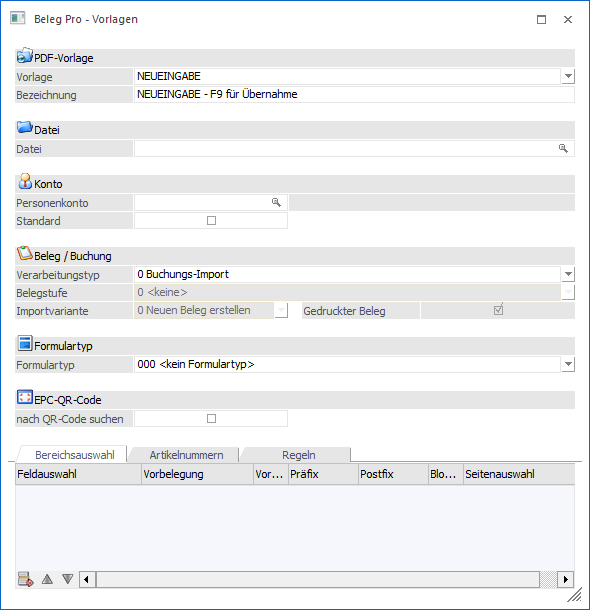
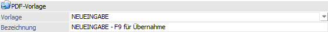
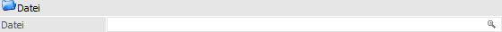
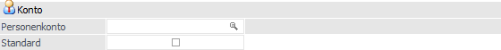
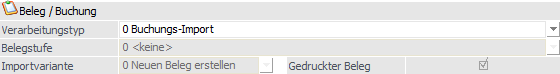
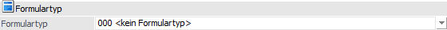
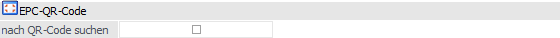
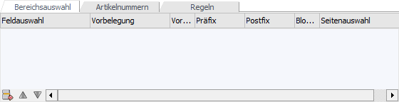
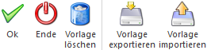

Beleg Pro Vorlagen sind für den Buchungsimport optional, es können jedoch bestimmte Variablen und Regeln definiert werden. Beim Belegimport von Belegen (Verarbeitungstyp Batchbeleg - Lieferschein und Faktura) ist eine Vorlage pro Kreditor notwendig.
Der Menüpunkt für diese Vorlagen kann unter…
1 WinLine START
1 Vorlagen
1 Beleg Pro
1 Beleg Pro - Vorlagen
… geöffnet und eine Neuanlage durchgeführt bzw. eine schon vorhandene Vorlage bearbeitet werden.

Folgende Eingabefelder und Einstellungen stehen zur Verfügung:
PDF-Vorlage

Ø Vorlage
Hier kann entweder eine bereits angelegte Vorlage geladen oder eine Neuanlage mittel dem Eintrag "NEUEINGABE" durchgeführt werden.
Ø Bezeichnung
Es wird die Bezeichnung der geladenen Vorlage angezeigt oder die Bezeichnung der Vorlage kann bei einer Neuanlage vergeben werden.
Datei

Ø Datei
Die Musterrechnung kann mittels Matchcode bzw. per Drag & Drop der Vorlage zugewiesen werden. Anhand dieses Musterbelegs können anschließend mit der Bereichsauswahl bestimmte Variablen und deren Bereich definiert werden.
Konto

Ø Personenkonto
Der Vorlage wird mittels mit diesem Feld einem Kreditor zugewiesen. Wenn anschließend beim Belegeingang dieser Kreditor gefunden wird, wird automatisch diese Vorlage vorbelegt.
Ø Standard
Wenn diese Option bei der Vorlage aktiviert wird, wird diese als Standard-Vorlage beim angegebenen Kreditor definiert. Wenn bei einem Beleg Pro Eingang der angegebene Kreditor erkannt wird, wird automatisch die definierte Standard-Beleg Pro Vorlage für den Beleg Pro Eingang herangezogen.
Pro Kreditor kann es nur eine Standardvorlage geben.
Beleg / Buchung

Ø Verarbeitungstyp
An dieser Stelle erfolgt die Definition, ob am Ende des Beleg Pro-Imports ein Buchungssatz oder ein Beleg erzeugt werden soll.
ü 0 - Buchungs-Import
Mit Auswahl
dieser Einstellung wird bei Verwendung dieser Vorlage im Anschluss des
Belegeingangs ein Buchungssatz innerhalb der FIBU generiert.
ü 1 - Batchbeleg
Wenn die
Einstellung "Batchbeleg" gewählt wird, wird bei Anwahl dieser Vorlage im
Anschluss des Belegeingangs ein Beleg innerhalb der FAKT erzeugt.
Hinweis
Folgende Punkte sind bei einem Belegimport zu berücksichtigten:
ü Beim Verarbeitungstyp "1 - Batchbeleg" können derzeit nur Hauptartikel ohne Ausprägungen innerhalb des Beleg Pro Vorgangs angegeben werden (daher auch nicht beim Umwandeln von Belegstufen über Beleg Pro).
ü Derzeit gibt es innerhalb des Beleg Pro Vorgangs keine Warnung, dass am Eingangsbeleg andere Artikelzeilen bzw. Mengen als im umzuwandelnden offenen Ursprungsbeleg vorhanden sind.
ü Des Weiteren kann immer nur ein offener Ursprungsbeleg für die Umwandlung angegeben werden (kein Sammellieferschein- bzw. Sammelfakturendruck aus mehreren Bestellungen/Lieferscheinen).
ü Für jede Umwandlung eines Belegs bzw. einer Belegstufe mittels Beleg Pro wird ein eigener Fall erzeugt.
Ø Belegstufe
Wurde der Verarbeitungstyp "1 - Batchbeleg" gewählt, so kann hier die Belegstufe gewählt werden.
ü 3 - Lieferschein
Es wird
letztendlich ein FAKT-Beleg in der Stufe Lieferschein (Einkaufsseitig)
erstellt.
ü 4 - Rechnung
Es wird beim
Belegeingang mit dieser Option der Beleg in der Stufe Rechnung (Einkaufsseitig)
gedruckt.
Ø Importvariante
Abhängig von der gewählten Belegstufe erfolgt an dieser Stelle die Hinterlegung, ob ein neuer Beleg oder ein Import zu einem bestehenden Beleg erfolgen soll.
ü 0 - Neuen Beleg erstellen
Es
wird ein neuer FAKT-Beleg in der angegebenen Belegstufe erstellt und kein
vorhandener Beleg umgewandelt.
ü 1 - Lieferschein zu Auftrag
importieren
Wenn mit dieser Beleg Pro Vorlage eine bereits vorhandene
Lieferantenbestellung in einen Lieferantenlieferschein umgewandelt werden soll,
dann muss diese Option gesetzt werden. Im Beleg Pro Import-Fenster wird in
weiterer Folge eine Auftragsnummer benötigt, damit das System weiß, welcher
Auftrag umgewandelt werden soll. Die Variable "025044 Auftragsnummer" kann
entweder bereits in der Vorlage anhand einer Maskierung vorbelegt werden bzw.
wird dieses Feld automatisch als Leereintrag eingefügt.
ü 2 - Rechnung zu Lieferschein
importieren
Wenn mit dieser Beleg Pro Vorlage ein bereits vorhandener
Lieferantenlieferschein in einen Lieferantenrechnung umgewandelt werden soll,
dann muss diese Option gesetzt werden. Im Beleg Pro Import-Fenster wird in
weiterer Folge eine Lieferscheinnummer benötigt, damit das System weiß, welcher
Lieferantenlieferschein umgewandelt werden soll. Die Variable "025045
Lieferscheinnummer" kann entweder bereits in der Vorlage anhand einer Maskierung
vorbelegt werden bzw. wird dieses Feld automatisch als Leereintrag
eingefügt.
Ø Gedruckter Beleg
Wenn diese Checkbox aktiviert ist, dann wird der Beleg beim Abschluss des Beleg Pro-Vorgangs direkt in der angegebenen Belegstufe fertiggestellt und gedruckt. Wenn diese Checkbox nicht aktiviert ist, dann wird der Beleg im Anschluss lediglich als "nicht gerechneter/nicht gedruckter Beleg" abgestellt und kann zu einem späteren Zeitpunkt in einer gewünschten Belegstufe gedruckt werden.
Formulartyp

Ø Formulartyp
In diesem Feld kann der Formulartyp bei Verwendung der Vorlage hinterlegt werden. Der Formulartyp steuert welcher Inhalt einer Buchungs-/Belegvariablen in welches Schlagwort bzw. in welches CRM-Feld übergeben werden soll.
EPC-OR-Code

Ø nach QR-Code suchen
Wenn diese Checkbox aktiviert ist, wird beim Belegeingang mit dieser Vorlage versucht ein QR-Code nach dem EPC-Standard auszulesen. Falls kein QR-Code auf den Lieferantenbelegen vorhanden ist, sollte diese Option deaktiviert sein.
Tabellen

Im unteren Bereich des Fensters stehen die folgenden Tabellen zur Verfügung:
ü Tabelle "Bereichsauswahl"
In der
Tabelle "Bereichsauswahl" können die Buchungs-/Belegvariablen einem Bereich
innerhalb der Musterrechnung zugewiesen werden.
ü Tabelle "Artikelnummer"
Mit Hilfe
der Tabelle "Artikelnummer" können die Artikelnummern, welche in den Belegen
mittels Texterkennung gefunden wurden, beeinflusst werden
ü Tabelle "Regeln"
In der Tabelle
"Regeln" können spezifische Regeln für das Füllen der Buchungs- bzw.
Belegvariablen hinterlegt werden.
Buttons

Ø Ok
Durch Anwahl des Buttons "Ok" bzw. der Taste F5 wird die Vorlage gespeichert.
Ø Ende
Bei Anwahl des Buttons "Ende" bzw. der Taste ESC wird das Fenster geschlossen und alle bisherigen Eingaben verworfen.
Ø Vorlage löschen
Die gerade gewählte Vorlage wird gelöscht und kann nicht mehr wiederhergestellt werden, außer diese wurde zuvor exportiert.
Ø Vorlage exportieren
Mithilfe dieses Buttons kann die gerade ausgewählte Vorlage als MPV-Datei exportiert werden. Bei Anwahl des Buttons öffnet sich der Windows-Dateiexplorer, wo ein Speicherort ausgewählt werden kann.
Ø Vorlage importieren
Wenn eine zuvor exportierte Vorlage importier werden soll, kann dies mithilfe des Buttons "Vorlage importieren" durchgeführt werden. Bei Anwahl des Buttons öffnet sich der Windows-Dateiexplorer und eine MPV-Datei ausgewählt werden. Nachdem die Vorlage importiert wurde, erscheint die Meldung, dass die Vorlage importiert wurde. Anschließend können noch Eingaben abgeändert und mittels "OK" gespeichert werden.